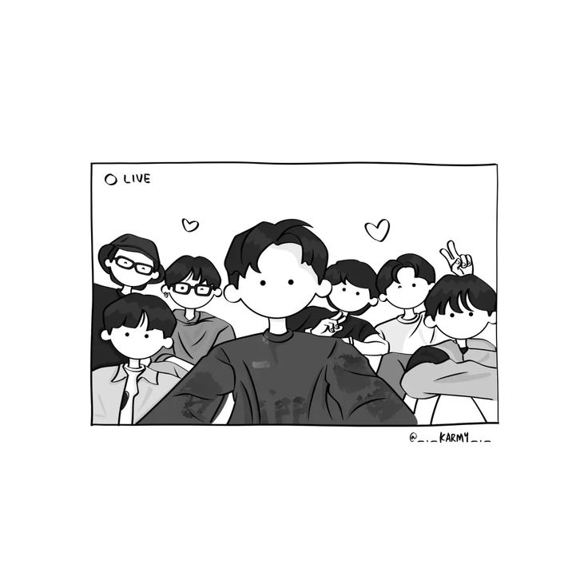
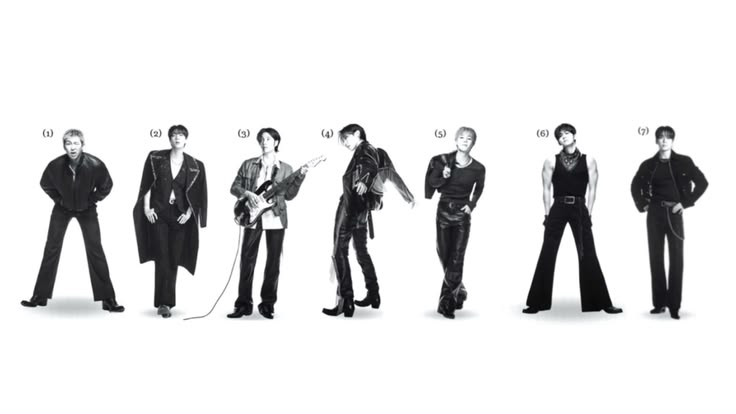

Hola,
bienvenido a mi página
Soy Naylea Hiromi Aguilar López, tengo 20 años y estoy formándome como programadora. Casi siempre ando con audífonos puestos y planes para salir con amigos.
Conóceme másLo que me gusta
una especie de playlist personal
a diario

Música
Escuchar musica es el curita al corazon
favorito
Bailar
Me hace sentir feliz.
esencial

Salir con amigos
Pasar tiempo con mi gente, siempre que se pueda.
en progreso
Aprender
Programación y todo lo que se cruce en el camino.
A veces, cuando estás en un lugar oscuro, crees que has sido enterrado cuando en realidad has sido plantado.” — Christine Caine
Luchando por mis sueños.
"“El éxito es la suma de pequeños esfuerzos repetidos día tras día.” — Robert Collier"